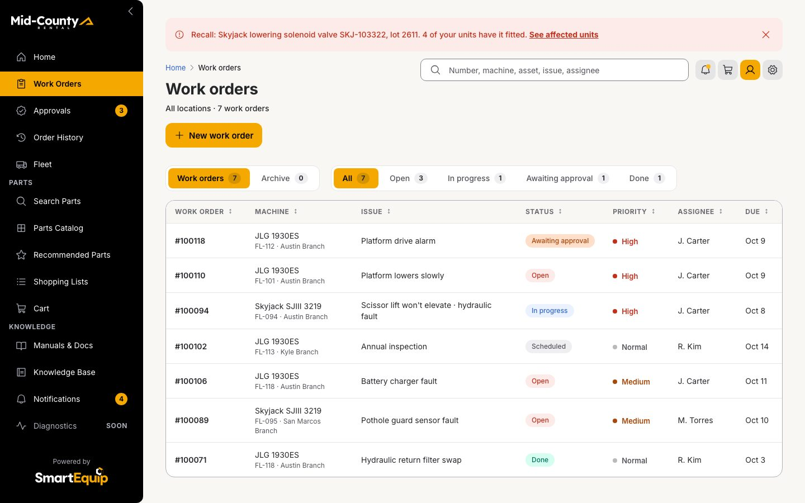
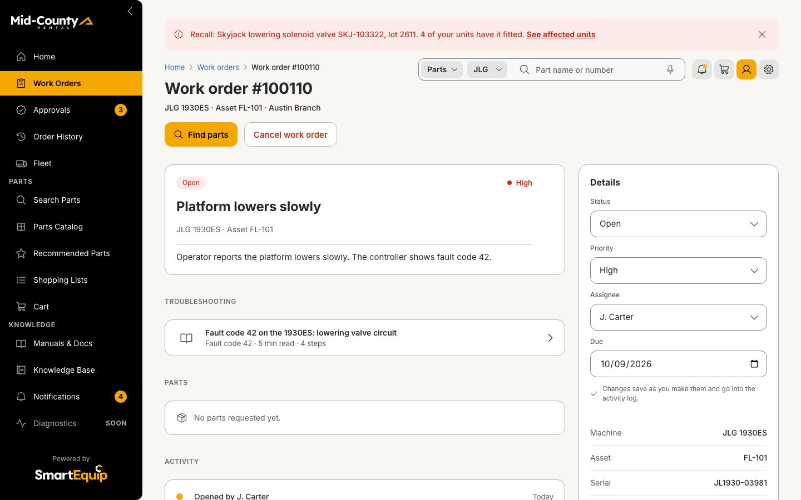
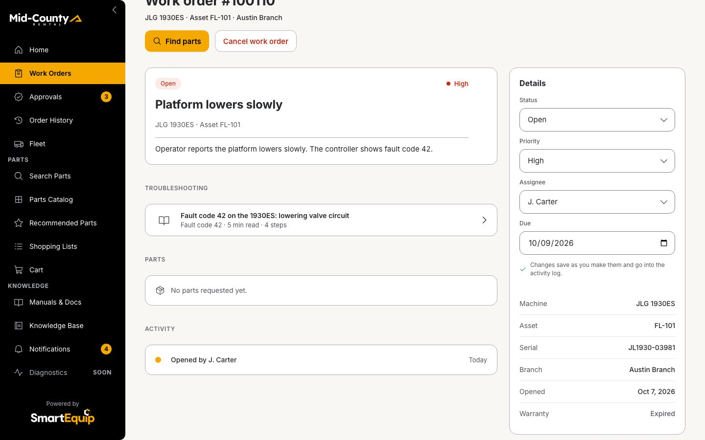
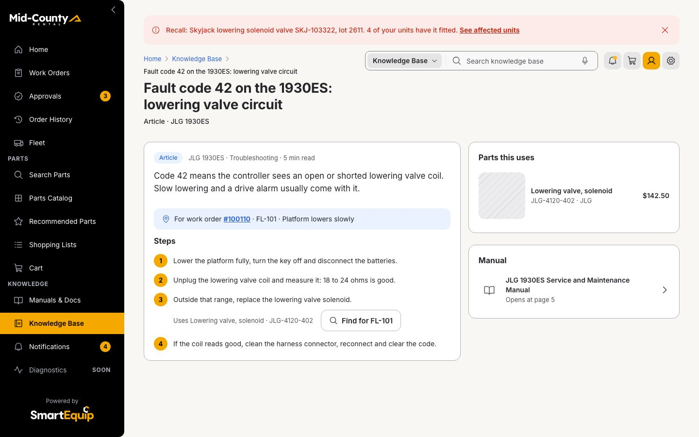
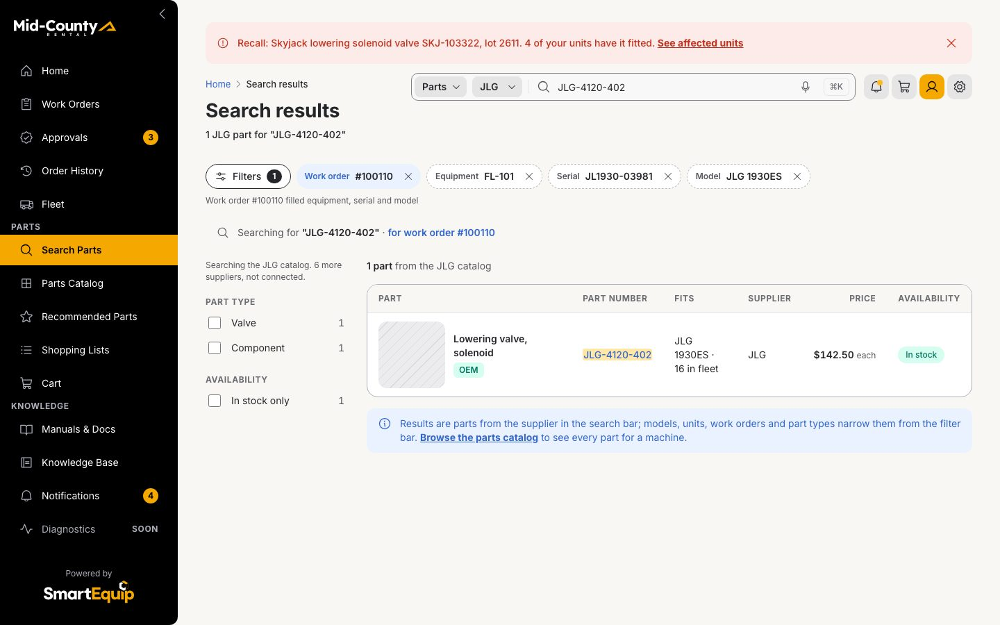
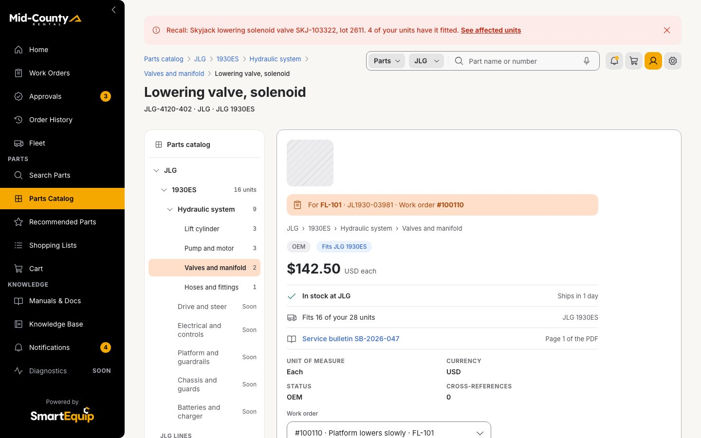
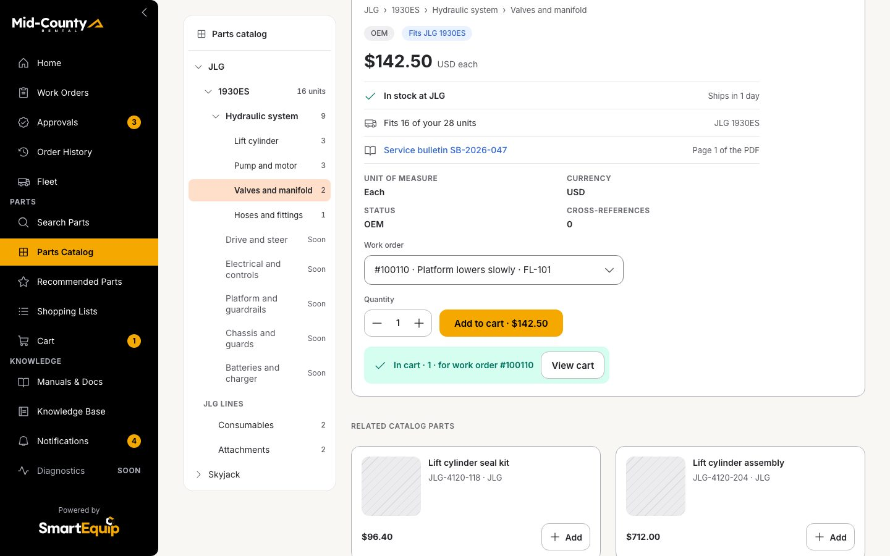

1 · Outcome
A fault code on a work order leads to the article written for it, and the article to the exact part, filtered to the unit: no part number is copied.
driver and patternbusiness objectoutcome
2 · Storyboard
Every step as the browser showed it once the step had settled, in 4 phases. Click a frame for full size.
Find the fault

Open Work Orders from the rail
Click · Work orders
Open #100110: the platform lowers slowly, fault code 42
Click · Work order
Read the fix

The fault code finds the article written for it
Look · Work order
Open it: the article opens for this work order
Click · Article
Step 3 names the part it needs: no 500-page PDF, no number to copy
Look · Article
Get the part

Click 1: Find for FL-101 opens the catalog filtered to the unit
Click · Search results
The work order is the filter: equipment, serial and model
Look · Search results
Click 2: the lowering valve
Click · Part
Click 3: add it to the cart for work order #100110
Click · Part


3 · Swimlane
Who does what, step by step: the supervisor's action, the screen it lands on, the rules the screen ran in the shared contracts and the records that changed.
supervisor stepscreen or rulerecord createdrecord changed
4 · Business objects
What the walkthrough reads, derives and writes, with the values of this run. Arrows read left to right.
readderived by a rulewrittenrisk
- Work order #100110 → Fleet unit FL-101: on unit
- Work order #100110 → Knowledge Base article: fault code
- Fleet unit FL-101 → Search context: findFor
- Knowledge Base article → Part JLG-4120-402: step 3
- Search context → Cart line: filter
- Part JLG-4120-402 → Cart line: Add
5 · The rule
How the work order finds its article and part: the match the rule made in this run.
"fault code 42" in work order #100110: Operator reports the platform lowers slowly. The controller shows fault code 42.
1 of 4 articles have fault 42 and model 1930ES: kb-fault-42
Step 1: no part · Step 2: no part · Step 3: JLG-4120-402 Lowering valve, solenoid · Step 4: no part
#100110 sets equipment FL-101, serial JL1930-03981, model 1930ES: the results arrive filtered
| Article | Fault | Model | Match |
|---|---|---|---|
| kb-fault-42 | 42 | 1930ES | yes |
| kb-cylinder-drift | none | 1930ES | no |
| kb-battery-health | none | SJIII3219 | no |
| kb-annual-1930es | none | 1930ES | no |
6 · State timeline
What the session held after each step: the records a reviewer can check in the prototype.
| Step | Action | Screen | Rules | Changed |
|---|---|---|---|---|
| 1 | Click: Open Work Orders from the rail | Work orders | ||
| 2 | Click: Open #100110: the platform lowers slowly, fault code 42 | Work order | Find the article for the fault | |
| 3 | Look: The fault code finds the article written for it | Work order | ||
| 4 | Click: Open it: the article opens for this work order | Article | Step names its part | |
| 5 | Look: Step 3 names the part it needs: no 500-page PDF, no number to copy | Article | ||
| 6 | Click: Click 1: Find for FL-101 opens the catalog filtered to the unit | Search results | Search context from the work order | Search context: FL-101, JL1930-03981, 1930ES |
| 7 | Look: The work order is the filter: equipment, serial and model | Search results | ||
| 8 | Click: Click 2: the lowering valve | Part | ||
| 9 | Click: Click 3: add it to the cart for work order #100110 | Part | Add to cart | Cart line: JLG-4120-402 × 1, WO #100110, FL-101 to Austin Branch |
| 10 | Look: 3 clicks from "I found the problem" to "the part is in my cart" | Part | ||
| 11 | Click: The cart line keeps the work order and the unit | Cart | Check the cart lines; Cost every source |
Drawn from the walkthrough as it played in this folder on 2026-10-27: the frames are the screens it showed, the values are what the rules returned and what the session recorded. Regenerate with node _src/value-diagrams.mjs.